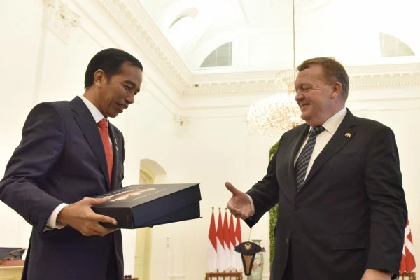
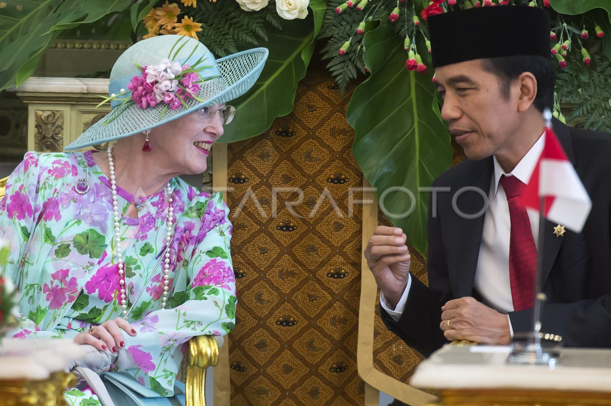
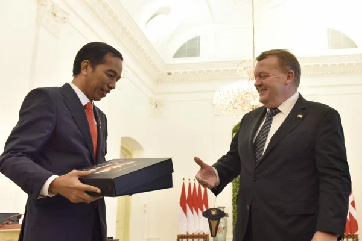
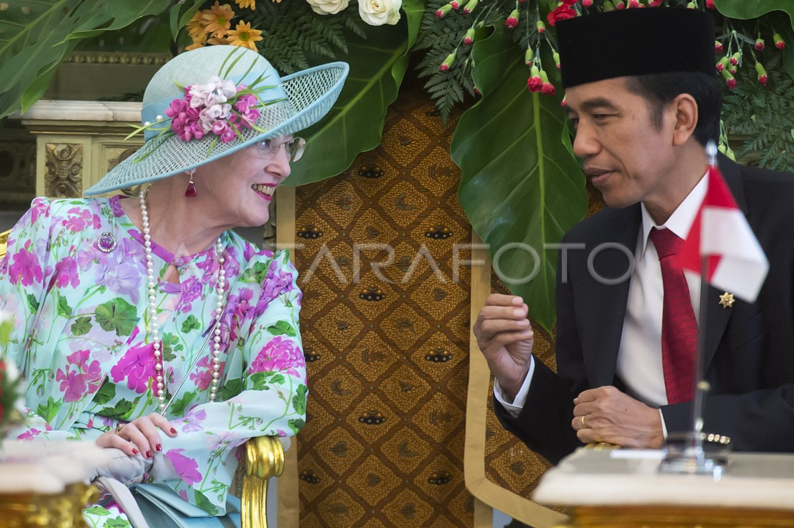

Kerjasama Bilateral
Bilateral merujuk pada hubungan atau kesepakatan antara dua pihak atau negara. Dalam konteks hubungan internasional, bilateral biasanya berarti perjanjian atau interaksi yang melibatkan dua negara untuk bekerja sama di berbagai bidang, seperti ekonomi, politik, atau keamanan.
Kerja sama bilateral adalah bentuk kolaborasi yang melibatkan dua negara untuk mencapai tujuan bersama. Dalam konteks akses energi, kerja sama ini biasanya mencakup transfer teknologi, investasi langsung, atau pengembangan proyek energi terbarukan di salah satu negara. Bilateral adalah hubungan antara dua negara dengan tujuan saling menguntungkan kedua belah pihak. Saat ini Indonesia telah menjalin kerjasama bilateral dengan 162 negara serta satu teritori khusus yang berupa non-self governing territory. Negara-negara mitra kerjasama Indonesia ini terbagi dalam delapan kawasan (Afrika, Timur Tengah, Asia Timur dan Pasifik, Asia Selatan dan Tengah, Amerika Utara dan Tengah, Amerika Selatan dan Karibia, Eropa Barat, dan Eropa Tengah dan Timur). Hubungan luar negeri Indonesia dengan negara-negara lain telah dimulai sejak Indonesia memproklamasikan kemerdekaannya pada 17 Agustus 1945. Berbagai forum, baik bilateral, regional maupun multilateral telah dirancang oleh Indonesia bersama-sama dengan negara-negara sahabat.
Kedua negara memiliki kemitraan dalam pengembangan energi terbarukan, khususnya angin dan efisiensi energi. Denmark membantu Indonesia melalui Danish Energy Partnership Programme (DEPP), yang memberikan dukungan teknis untuk meningkatkan pemanfaatan energi terbarukan dan efisiensi energi di sektor kelistrikan. Pada kesempatan tersebut, telah dilaksanakan penandatanganan resmi Protokol Amandemen Kedua Indonesia - Denmark bidang Energi Terbarukan, Bersih dan Konservasi Energi yang merupakan pembaruan dari MoU yang ada dan sekaligus memfasilitasi Kerjasama INDODEPP dan kegiatan kerjasama energi lainnya di masa depan.
Galeri Indonesia-Denmark
 


